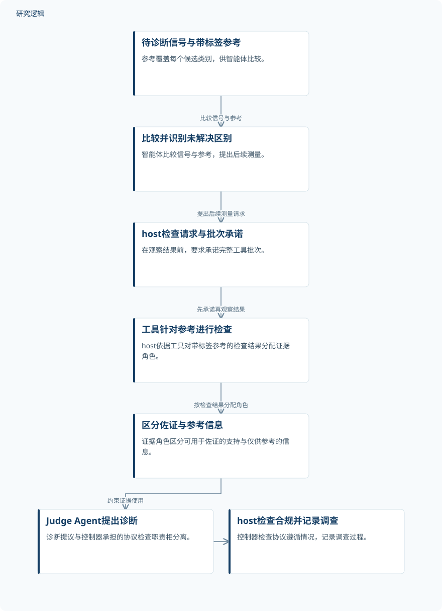

摘要解读
Agentic4PDM：面向工业故障诊断的宿主控制证据准入框架
Agentic4PDM: Host-Governed Evidence Admissibility for Industrial Fault Diagnosis
解读更新 2026-10-16 15:53 · 依据公开摘要整理，未核验全文细节
工业故障诊断不仅需要识别信号，还要判断哪些分析结果足以支撑结论。Agentic4PDM将大模型智能体的灵活调查与软件控制器的证据约束分开，为理解智能体如何参与可信诊断提供了一个具体切入点。
文章目录
信号仍有线索，诊断却不能任意解释
这项研究将工业故障诊断定义为分类任务：把传感器时间序列窗口分配到预设的健康状态或故障类型。标签稀缺、运行工况变化，使专用分类器的反复训练代价较高；但信号中的周期性、趋势和瞬态结构仍可能保留诊断信息，并可通过复用分析工具加以检查。
大模型智能体能够选择工具并解释结果，却面临两类困难：固定规则或训练所得指导未必能消除每个信号的歧义；不受约束的解释又可能夸大弱证据或相互冲突的结果。本文针对的正是这种调查灵活性与证据约束之间的张力。
智能体负责调查，host约束证据使用
Agentic4PDM让智能体将待诊断信号与所有候选类别的带标签参考进行比较，识别尚未解决的类别区别，并提出后续测量。确定性软件控制器host负责执行契约检查式门控裁决（CCGA）：检查请求，要求在观察结果前承诺完整的工具批次，并根据工具针对带标签参考的检查结果分配证据角色。
这些角色区分可用于佐证的支持信息与仅供参考的信息。Judge Agent提出诊断，控制器检查协议遵循情况并记录调查过程。框架既支持使用预训练表示和带标签参考、无需任务专用诊断模型的免训练诊断，也支持进一步调查已训练模型预测的标准设置。这里的“免训练”不等于不使用标签或预训练资源。
依据摘要整理的调查与证据约束示意


概括智能体调查、host证据约束及诊断提议之间的关系，仅依据摘要整理，并非论文原图。
下载 SVG图示关系说明
实线表示相邻阶段的信息流，虚线表示跨阶段联系或反馈。
待诊断信号与带标签参考 → 比较并识别未解决区别：比较信号与参考；比较并识别未解决区别 → host检查请求与批次承诺：提出后续测量请求；host检查请求与批次承诺 → 工具针对参考进行检查：先承诺再观察结果；工具针对参考进行检查 → 区分佐证与参考信息：按检查结果分配角色；区分佐证与参考信息 → Judge Agent提出诊断：约束证据使用；Judge Agent提出诊断 → host检查合规并记录调查：控制器检查协议合规
摘要报告了汇总宏平均F1的提升
摘要报告，在选定的轴承与电机诊断挑战，以及客户提供的未筛选工业测试集上，Agentic4PDM相较于所评估的诊断基线和智能体基线，取得了汇总宏平均F1的提升。摘要还称，消融分析进一步支持了受控工作流程的价值。
这一结果的表述边界是“所评估基线上的汇总指标改善”，并不直接意味着每个数据集、每类故障或每种工况都获得提升。摘要没有提供可用于展开这些比较的具体结果。
样本构成与验证边界仍需查阅全文
仅凭本次摘要，无法判断样本规模、类别分布、窗口划分、参考样本选择及训练测试隔离方式，也无法核对基线配置、提升幅度和不确定性。工业测试集被描述为“未筛选”，但其覆盖的设备、工况与故障范围仍不明确。
摘要也不足以判断各项消融分别支持哪些机制，以及调查需要多少工具调用、时间和计算成本。这些都是当前材料无法回答的问题，不能据此认定论文未开展相关比较或验证。
阅读启发：关注证据怎样获得裁决资格
阅读启发：对智能运维而言，值得关注的不只是智能体能调用哪些工具，还包括工具结果在什么条件下能成为诊断依据。进一步阅读时，可重点追问：佐证与参考角色如何划分，冲突信息如何处理，以及免训练设置与标准设置的收益分别来自哪里。这些问题有助于理解框架的适用边界，而不是预先认定其已具备普遍可靠性。
以上为本站阅读启发与建议，不是论文已验证的结论。